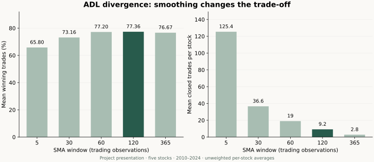
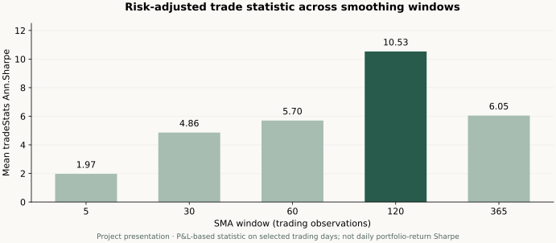

The research question
Can divergence between smoothed price and volume-based accumulation identify trading signals, and how sensitive are the results to moving-average windows and stock selection?
Data & methodology
Daily Yahoo Finance OHLCV and adjusted prices for KO, NVDA, AMZN, IBM and GOOG, covering 2010–2024. The repository retrieves these five stocks directly with quantmod. The project was completed for MGMT 41310: Financial Modeling.
- Implemented ADL from scratch as a reusable R function using cumulative money-flow volume, including a zero-range price-bar safeguard.
- Compared percentage changes in moving averages of adjusted price and ADL. Entered long on price-down/ADL-up divergence and exited on the opposite signal.
- Backtested the rules in quantstrat with $1 million initial equity, 1,000-share additions and full-position exits at the next available opening price.
- Compared 5-, 30-, 60-, 120- and 365-observation windows, and examined portfolio-composition comparisons from the team analysis.
- Evaluated per-stock winning-trade percentages, trade counts, profit/drawdown measures and the tradeStats risk-adjusted statistic.
What the evidence shows
In the project comparison, increasing the smoothing window from 5 to 120 observations raised the mean winning-trade percentage from 65.80% to 77.364%, while mean trades per stock fell from 125.4 to 9.2. The reported risk-adjusted trade statistic also improved. The 120-observation window did not lead every measure, illustrating the trade-off between signal frequency and performance.



Implications
The project connects reusable indicator programming with systematic strategy evaluation. It shows how smoothing and portfolio composition affect win rates and risk-adjusted trade statistics, supporting comparison of alternative strategy configurations.
Explore the implementation
The repository contains source code, datasets or retrieval instructions, model results and execution instructions.
View Source Code on GitHub ↗